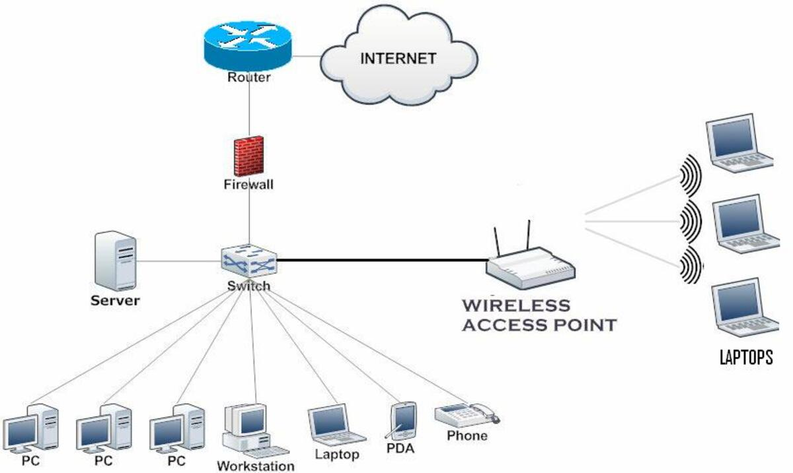

If you follow this tutorial, you'll be able to build your own safe home network in a budget.
Nowadays, it's widely recognized that big corporations prioritize maximizing profits, often overwhelming free users with unnecessary features, products, and services. ISPs (Internet Service Providers) are notorious for including services such as routing cables or setting up routers. This also raises privacy concerns. This tutorial will guide you through a quick and easy way to pick and build your own home network (LAN), you'll still need an ISP to connect your network to the broader Internet (WAN) unfortunately.
It's important to highlight that this is a solution for homes or small offices. There are other guides online, we recommend you looking at TechTarget and MakeUseOf pages.
A home network system consists of various devices linked together on the same network, allowing them to communicate with each other. These devices can include computers, printers, mobile devices, gaming consoles, and any other Internet of Things (IoT) gadgets you might have at home. You can connect these devices using cables for a wired setup or use Wi-Fi for a wireless connection. This network setup enables you to manage and secure all your devices from a central point, ensuring seamless communication and control across your home.
A LAN (Local Acess Network) its a network that connects devices within a limited geographical area, such as a home, office, or campus. A WAN (Wide Acess Network) its a network that covers a much larger geographical area, potentially spanning cities, countries, or even continents, typically refered as the broader Internet.
When building a home network on a budget, it is crucial to consider your financial limits and the scale of your network. The scale can be broken down into three main factors: physical size, number of clients, and throughput/bandwidth.
The physical size of your network space is essential. Different setups are required depending on whether you need a network for a small apartment, a two-story townhouse, or a company office.
Small Apartment or Single-Story House : For small spaces with a limited budget, using the ISP-provided modem-router-switch combination is often sufficient.
Larger Homes: Additional or better access points are necessary. It's recommend to use mesh access point systems, which ensure seamless coverage throughout the entire house.
Detached Areas or Outdoor Spaces: For areas like detached garages or outdoor spaces, long-range access points are ideal. For security cameras, consider running Ethernet cables and using Power over Ethernet (PoE).
The number of devices or clients connecting to your network is another crucial factor.
Small Households: For a family of four, a simple setup with an ISP modem-router and a 200Mb contract should suffice.
Larger Homes or Comunities: For common spaces for every person there is 3 to 4 devices if you have more than 8 people and or about 32 devices using the internet including streaming videos or downloading files its recommended to have a better ISP contract per example 1Gb upload and download aswell as having better acess points that support 5Ghz and MU-MIMO.
Large Companies: For environments with more devices, such as businesses with more than 100 employees, additional infrastructure is needed. This includes higher capacity enterprise switches, access points, and more robust networking equipment.
Throughput and bandwidth refer to the amount of data transferred per second. High-bandwidth activities, like streaming high-quality videos or downloading large files, benefit from greater bandwidth.
Home Use: For most households, Cat5e Ethernet cabling is recommended, as it supports speeds up to 1Gbps this can be future-proof because the bandwidth used by aplications, sites and files as been going up exponentially over the years, this is adequate for a family of five with advanced networking needs like a NAS (Network Attached Storage) for high-quality media. A family of five typically needs about 500Mbps download and upload speeds from their ISP.
Small Businesses: Similar guidelines apply as for home use, but with higher demands, consider investing in 2.5Gbps or 10Gbps cabling and switches.
Larger Companies: For larger businesses such as in company offices, where many people are constantly online and transferring files, higher bandwidth is necessary. We recommend switches supporting 2.5Gbps or 10Gbps and a business-class ISP contract offering speeds up to 2Gbps. For environments with over 250 connected devices, enterprise-grade access points are essential.
First, you'll need to choose the right equipment for your home network. This includes a router, and possibly some switches and access points. Make sure your router supports the Wi-Fi you want, has enough ports for your wired connections, and has the security and features you want.
If you want to connect to the Internet (WAN) you'll need a modem which is provided by your ISP, you can ask to set it up in bridge mode if its a combination or AIO (all in one) device. This makes it so it only acts as the modem and leaves the router and switching roles to the devices you already own.
There are devices that have multiple roles, the modems provided by your ISP normally are AIO or combination devices and act as routers, switches and acess points all in one device.
In networking terminology, both "net" and "web" imply an interconnected system. Just as in physical nets or webs, not every point or node is connected to every other point directly. The structure governing these interconnections is known as network topology. Different types of topologies dictate how devices are connected and interact with each other.
Network topology refers to the arrangement of different elements (links, nodes, etc.) in a computer network. Common types of network topologies include:
Bus Topology: All devices are connected to a single central cable, known as the bus or backbone.
Star Topology: Each device is connected to a central hub or switch, forming a star-like shape.
Ring Topology: Devices are connected in a circular fashion, with each device having exactly two neighbors.
Mesh Topology: Every device is connected to every other device, providing high redundancy and reliability.
Tree Topology: A hierarchical topology that combines characteristics of star and bus topologies.
Hybrid Topology: A combination of two or more different types of topologies.
For home use, we recommend star or hybrid topology. This topology is ideal for home networks due to its simplicity, ease of setup, and reliability. Each device (e.g., computers, smartphones, smart TVs) connects to a central hub, the switch or router or combination router-switch connects to the modem and thus to the broaded Internet.
To configure your network settings, access the router's settings via a web browser and configure the network name (SSID) and password. Set up any additional security features such as WPA3 encryption and a guest network if needed.
Start connecting your devices to the network. For wired connections, use Ethernet cables to connect devices directly to the router or switches. It's important that use the right type of cables for your deployment, probably the best option for you is Cat5e twisted pair cables, for more information on cables go to Tripplite. For wireless connections, search for the network name standing next to the acess point and enter the password on your devices. The wireless conection is weaker the further away you are from the acess point, having obstrusions like walls and having eletromagnetic noise like high power tools or other devices on your acess point range will impact the range and speeds of your connection. For more details on noise visit Promptlink. Its a good practice to keep lower bandwith and untrusted devices on a guest network and having 2.4Ghz. The main network should be reserved for trusted devices, high bandwith devices like your desktop, laptop, server or streaming box should be connected to 5Ghz or higher.
Here is an example network that follows our recommendations:
Once all devices are connected, test the network by browsing the internet, streaming videos, and transferring files between devices. Make sure the connection is stable and speeds are as expected.
It's important to have a WPA2 or WPA2 security and a guest network. You can also setup your network for safer Firewall, VPN, DNS and VLANS, aswell as setting up your own server on you network for other uses, per example, as a NVR (Network Video Recorder) or Network Supervisor or NAS (Network Attached Storage) for file sharing and backups. Having a server allows devices on the network to access the files or services hosted on the server, you can have shared files and store backups centrally.